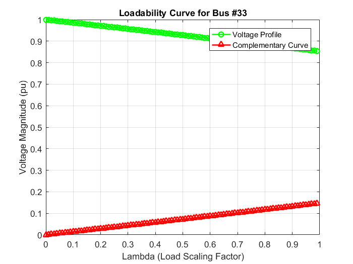

Contents
clear all; close all;
Data for 33-Bus Radial Distribution System
branch = [1 1 2 0.0922 0.0470;
2 2 3 0.4930 0.2511;
3 3 4 0.3660 0.1864;
4 4 5 0.3811 0.1941;
5 5 6 0.8190 0.7070;
6 6 7 0.1872 0.6188;
7 7 8 0.7114 0.2351;
8 8 9 1.0300 0.7400;
9 9 10 1.0040 0.7400;
10 10 11 0.1996 0.0650;
11 11 12 0.3744 0.1238;
12 12 13 1.4680 1.1550;
13 13 14 0.5416 0.7129;
14 14 15 0.5910 0.5260;
15 15 16 0.7463 0.5450;
16 16 17 1.2890 1.7210;
17 17 18 0.7320 0.5740;
18 2 19 0.1640 0.1565;
19 19 20 1.5042 1.3554;
20 20 21 0.4095 0.4784;
21 21 22 0.7089 0.9373;
22 3 23 0.4512 0.3083;
23 23 24 0.8980 0.7091;
24 24 25 0.8960 0.7011;
25 6 26 0.2030 0.1034;
26 26 27 0.2842 0.1447;
27 27 28 1.0590 0.9337;
28 28 29 0.8042 0.7006;
29 29 30 0.5075 0.2585;
30 30 31 0.9744 0.9630;
31 31 32 0.3105 0.3619;
32 32 33 0.3410 0.5302];
bus = [1 0.000 0.000;
2 0.100 0.060;
3 0.090 0.040;
4 0.120 0.080;
5 0.060 0.030;
6 0.060 0.020;
7 0.200 0.100;
8 0.200 0.100;
9 0.060 0.020;
10 0.060 0.020;
11 0.045 0.030;
12 0.060 0.035;
13 0.060 0.035;
14 0.120 0.080;
15 0.060 0.010;
16 0.060 0.020;
17 0.060 0.020;
18 0.090 0.040;
19 0.090 0.040;
20 0.090 0.040;
21 0.090 0.040;
22 0.090 0.040;
23 0.090 0.050;
24 0.420 0.200;
25 0.420 0.200;
26 0.060 0.025;
27 0.060 0.025;
28 0.060 0.020;
29 0.120 0.070;
30 0.200 0.600;
31 0.150 0.070;
32 0.210 0.100;
33 0.060 0.040];
% Number of buses and branches
bn = length(bus(:,1)); % Number of buses
bnn = length(branch(:,1)); % Number of branches
Convert data to per-unit (pu) using base voltage 12.66 kV and base MVA = 100
zbase = 12.66 * 12.66 / 100; branch(:,4) = branch(:,4) ./ zbase; % Convert R to pu branch(:,5) = branch(:,5) ./ zbase; % Convert X to pu bus(:,2) = bus(:,2) ./ 100; % Convert real power (P) to pu bus(:,3) = bus(:,3) ./ 100; % Convert reactive power (Q) to pu % Impedance matrix (complex R + jX) z(:,1) = complex(branch(:,4), branch(:,5)); % Define bus connection parameters b = branch(:,2); % From bus c = branch(:,3); % To bus % Initialize voltage vector (complex) with magnitude 1 and angle 0 v(1:bn,1) = complex(1,0); v0 = v; % Flat start % Program for BIBC (Bus Injection to Branch Current) and BCBV matrices BIBC = zeros(bnn, bn); % bnn = number of branches, bn = number of buses BCBV = zeros(bn, bnn); % bn = number of buses, bnn = number of branches
Load PV power values
load('pv_data.mat', 'P_pv', 'Q_pv');
Convert PV power to per-unit
base_MVA = 100e6; P_pv_pu = P_pv / base_MVA; Q_pv_pu = Q_pv / base_MVA; % Inject PV power at Bus 33 bus(33,2) = bus(33,2) - P_pv_pu; % Reduce demand by PV active power bus(33,3) = bus(33,3) - Q_pv_pu; % Reduce demand by PV reactive power fprintf('PV System added at Bus 3: P = %.2f MW, Q = %.2f MVAR\n', P_pv, Q_pv);
PV System added at Bus 3: P = 3101.20 MW, Q = 1921.95 MVAR
Construct BIBC matrix
for k = 1:bnn i = b(k); % From bus j = c(k); % To bus BIBC(k, j) = 1; % Update current injection relation if k > 1 BIBC(k, :) = BIBC(k, :) + BIBC(k - 1, :); % Update for k > 1 end end % Construct BCBV matrix for k = 1:bnn i = b(k); % From bus j = c(k); % To bus BCBV(j, k) = z(k); % Update branch impedance if i ~= 0 BCBV(j, :) = BCBV(i, :) + BCBV(j, :); end end % Calculate DLF (Distribution Load Flow) matrix DLF = BCBV * BIBC; % (bn x bnn) * (bnn x bn) -> (bn x bn) % Initialize continuation parameters lambda = 0; % Starting continuation parameter sigma = 0.01; % Step size for continuation tolerance = 1e-5; % Convergence tolerance maxIterations = 100; % Max iterations per load flow maxLambda = 1; % Maximum load scaling factor BusForCPF = 33; % Bus for loadability analysis % Initialize storage for results VoltageAtBus = []; % Voltage magnitudes at the selected bus LambdaValues = []; % Lambda values
Continuation Load Flow loop
while lambda <= maxLambda % Scale the load with the continuation parameter P(:,1) = lambda * complex(bus(:,2), bus(:,3)); % P and Q scaling P1 = P(2:bn); % Exclude slack bus % Initialize current injection for branches I1 = zeros(bnn, 1); for k = 1:bnn fromBus = b(k); toBus = c(k); I1(k) = conj(P(toBus) / v(toBus)); % Current in each branch end % Iterative Backward/Forward Sweep for iter = 1:maxIterations % Update voltage using DLF considering both real and reactive power v1 = DLF(2:bn, 2:bn) * I1; % Voltage drop along branches (size (bn-1) x 1) % Update bus voltages (excluding slack bus) v(2:bn) = v0(2:bn) - v1; % Update bus voltages % Update branch currents based on new voltage values I2 = zeros(bnn, 1); for k = 1:bnn fromBus = b(k); toBus = c(k); I2(k) = conj(P(toBus) / v(toBus)); end % Convergence check if max(abs(I1 - I2)) < tolerance break; % Converged end I1 = I2; % Update for next iteration end % Store results at each step VoltageAtBus = [VoltageAtBus; abs(v(BusForCPF))]; % Voltage magnitude at chosen bus LambdaValues = [LambdaValues; lambda]; % Scaling factor for load lambda = lambda + sigma; % Increase lambda for next iteration end
Plot Loadability Curve
figure; plot(LambdaValues, VoltageAtBus, 'go-', 'LineWidth', 1.5, 'MarkerSize', 6); % Voltage vs Lambda hold on; plot(LambdaValues, 1 - VoltageAtBus, 'r^-', 'LineWidth', 1.5, 'MarkerSize', 6); % Complementary curve xlabel('Lambda (Load Scaling Factor)'); ylabel('Voltage Magnitude (pu)'); title(['Loadability Curve for Bus #', num2str(BusForCPF)]); grid on; legend('Voltage Profile', 'Complementary Curve'); % Store voltage profile before and after PV injection VoltageWithPV = abs(v); % Voltage after PV injection
